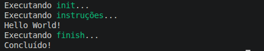

Iniciando com foxmake
Atenção:
Para o foxmake funcionar, é necessário que o g++ esteja acessível no seu sistema operacional. Ou gcc, caso queira compilar arquivos C, necessitando especificar que deseja compilar com gcc, e não, g++.Se estiver no windows, pode instalar o mingw64 através do site:
https://www.mingw-w64.org/
Ou do repositório do mingw-build-binaries: https://github.com/niXman/mingw-builds-binaries/releases
Atenção:
Caso o windows bloqueie o foxmake
Se o windows bloquear o foxmake, pode ser devido a alguma Política de Restrição de Software ou Controle de Aplicativo do Windows Defender. Isso significa que, provavelmente por o foxmake ser pouco utilizado ou não ter assinatura digital, o windows entenda que ele pode não ser confiável. Mas é! Para desbloquear o foxmake, neste caso, você pode fazer o seguinte:
- Clique no foxmake com o botão direito do mouse
- Vá em propriedades
- Na aba Geral, marque a opção Desbloquear
Para um primeiro uso do foxmake, podemos executar comandos sem a necessidade de informar tarefas para execução. Por exemplo, vamos fazer um exemplo que imprime a mensagem "Hello World!". Então vamos lá!
Na raiz do projeto crie o arquivo de nome FoxMakefile ou FoxMakefile.txt com o seguinte conteúdo:
echo Hello World!
Agora, instale o foxmake se não já estiver instalado e, após isto, na pasta raiz do projeto pelo shell, execute o seguinte comando:
foxmakeAgora, você deve ver algo como:

Agora, você pode ocultar o resumo para mostrar apenas o resultado da execução do FoxMakefile executando o seguinte:
foxmake --no-resumeAgora aparece apenas a mensagem "Hello World!"
Próxima aula
O próxima aula ensina como criar um primeiro exemplo C++ e buildar com foxmake!